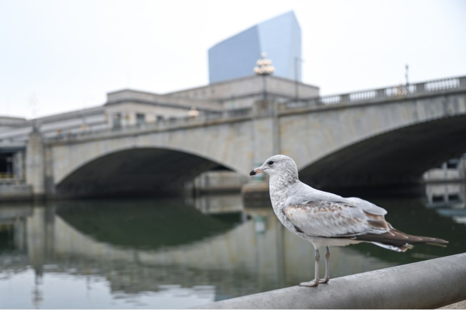
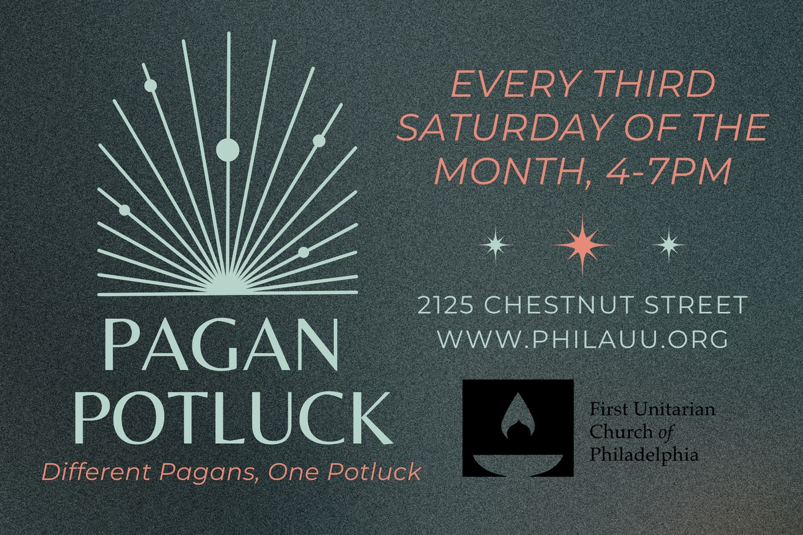

First Unitarian Church of Philadelphia
2125 Chestnut Street, Philadelphia PA

The Philly CUUPS (Covenant of Unitarian Universalist Pagans) group of the First Unitarian Church of Philadelphia honors the UUA 7th principle; “Respect for the interdependent web of all existence of which we are a part”. We adhere to the mission statements of First U, National CUUPS, and the principles of the Unitarian Universalist Association.
Philly CUUPS seeks to foster a sacred, inclusive space that welcomes pagan and Earth-centered spiritual practices, as well as indigenous and ancestral spiritual folk practices, which intertwine with Unitarian Universalist values of justice, equity, pluralism, and love. As part of this commitment, we seek to build and sustain the Philly CUUPS group in a way that harmonizes with the larger community of First U. In furtherance of that goal, Philly CUUPS and 1st Unitarian Church of Philadelphia covenant together to:
